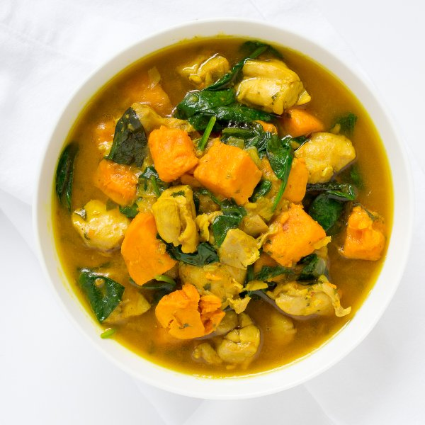

Chicken & Sweet Potato Curry with Coconut Milk & Spinach

Prep Time
45 min
Nutrition (per serving)
691.6 kcalCalories
51.4 gProtein
49.4 gCarbs
33.4 gFat
Full nutrition table
| Calories | 691.6 kcal |
| Total fat | 33.4 g |
| Saturated fat | 23.2 g |
| Trans fat | 0.1 g |
| Cholesterol | 213.2 mg |
| Sodium | 363.1 mg |
| Carbohydrates | 49.4 g |
| Fiber | 9.5 g |
| Sugars | 13.1 g |
| Protein | 51.4 g |
| Potassium | 1724.2 mg |
| Calcium | 152.2 mg |
| Iron | 7 mg |
| Vitamin A | 24224.8 IU |
| Vitamin C | 24.2 mg |
| Vitamin D | 2.3 IU |
Cookware
Ingredients
- 1 (5 oz) pkgbaby spinach
- 2 lbchicken thighs, boneless skinless
- 1 small bunchcilantro
- 1 (13.5 fl oz) cancoconut milk
- 4 clovesgarlic
- 2 (1 inch) piecesginger root
- 1 ½ lbsweet potatoes
- 1 mediumyellow onion
- black pepper
- curry powder
- salt
- turmeric, ground
- virgin coconut oil
Steps
- Wash and dry the fresh produce. (Skip the spinach if it came pre-washed.)1 ½ lb sweet potatoes
2 (1 inch) pieces ginger root
1 small bunch cilantro
1 (5 oz) pkg baby spinach - Peel and cut the sweet potatoes into ¾-inch cubes; transfer to a medium bowl.
- Trim off and discard the ends of the onion and remove the outer layer; small dice the onion (cut into ¼-inch pieces) and transfer to a small bowl.1 medium yellow onion
- Preheat the sauté pan over medium-high heat.
- While the pan heats up, pat the chicken thighs dry with paper towels and place on the cutting board. Cut the chicken into bite-sized pieces.2 lb chicken thighs, boneless skinless
- Once the pan is hot, add coconut oil and swirl to coat the bottom.1 tbsp virgin coconut oil
- Add the onion and chicken to the pan and season with salt and pepper; cook, tossing occasionally, until the onion is softened and the chicken is browned, 5 to 6 minutes.1 tsp salt
½ tsp black pepper - Wash and dry the cutting board and knife.
- Peel and grate or mince the ginger; transfer to a small bowl.
- Trim off and discard the root ends of the garlic; peel and mince or press the garlic. Add to the bowl with the ginger.4 cloves garlic
- Add the ginger, garlic, curry powder, and turmeric to the pan; stir until fragrant, 15 to 30 seconds.2 tbsp curry powder
2 tsp turmeric - Add the sweet potatoes and coconut milk to the pan; season with salt and pepper. Bring the mixture to a boil, then reduce heat to a simmer, cover the pan, and cook until the sweet potatoes are tender, 12 to 15 minutes.1 (13.5 fl oz) can coconut milk
½ tsp salt
¼ tsp black pepper - Using a knife, shave the cilantro leaves off the stems at a downward angle, working away from your body; discard the stems and finely chop the leaves. Stir about ¾ of the cilantro into the curry and save the rest for garnishing.
- Once the sweet potatoes are tender, add the spinach to the curry and stir until wilted, then remove the curry from the heat.
- To serve, spoon the curry into a bowl and sprinkle with the remaining cilantro. Enjoy!